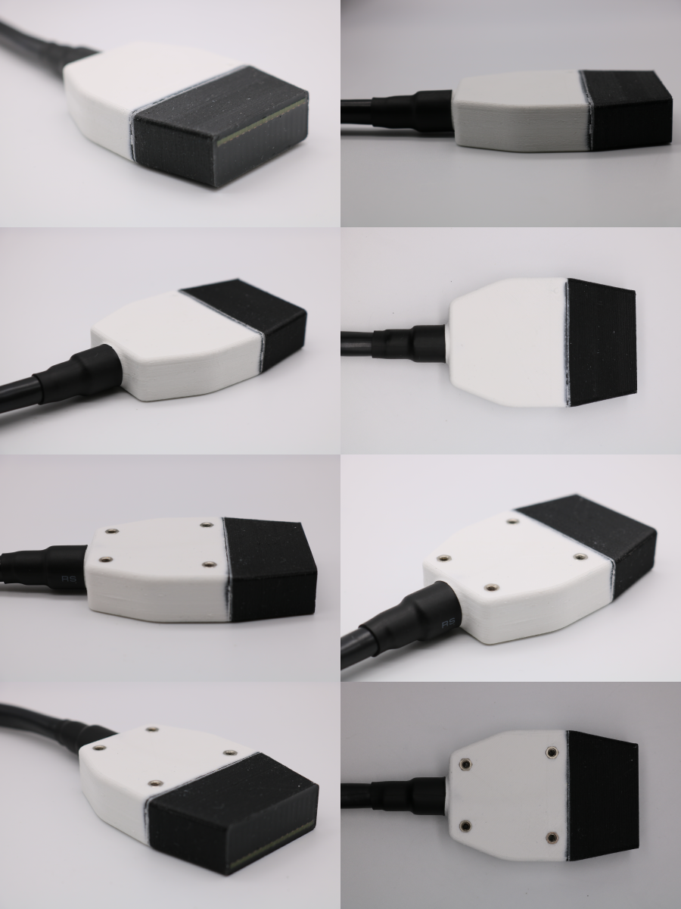

System Description
Each transducer module is a 16-element linear array, with complete electromagnetic shielding and waterproofing. The standard 256-element open-UST imaging system is formed by assembling 16 of these modules into a ring array.
Each module has the following specifications:
- Ring array diameter: 220 mm
- PZT elevation height: 10 mm
- PZT lateral width: 1 mm
- PZT thickness: 1 mm
- PZT pitch: 2.54 mm
- Transmit-Receive watershot data characteristics (N = 256):
- Resonance frequency: 1.21 MHz 7.1 kHz
- Amplitude deviation at resonance: 7.9%
- 6 dB FBW (1.08 MHz - 1.41 MHz): 29% 6.1%
- 12 dB FBW (924 kHz - 1.58 MHz): 54% 4.9%
- 40 dB FBW (528 kHz - 2.61 MHz): 170% 3.0%
- Signal to noise ratio: 61.2 dB 1.2 dB
- Receive cross talk: -37.1 dB 6.0 dB
- Beam Pattern (N = 64):
- Elevational skew: 0.457 0.207
- Lateral skew: 1.169 0.834
- Elevational -6 dB beamwidth: 16.3 mm 0.456 mm
- Lateral -6 dB opening angle: 55.4 2.96
- Electrical Input Impedance (N = 128):
- Phase at resonance: -8.58 4.96
- Magnitude at resonance: 1114 121
Further Reading
- M. Roberts, E. Martin, M. Brown, B. Cox and B. Treeby, "Transducer Module Development for an Open-Source Ultrasound Tomography System," 2021 IEEE International Ultrasonics Symposium (IUS), 2021, pp. 1-4, doi: 10.1109/IUS52206.2021.9593866 Available for download here
- M. Roberts, E. Martin, M. Brown, B. Cox and B. Treeby, "Matching Layer Deposition for an Open-Source Ultrasound Tomography System: Inter-Element Variation in Frequency Response," 2022 IEEE International Ultrasonics Symposium (IUS), 2022, pp. 1-4, doi: 10.1109/IUS54386.2022.9957739 Available for download here
- Roberts, Morgan, Eleanor Martin, Michael D. Brown, Ben T. Cox, and Bradley E. Treeby. "open-UST: An Open-Source Ultrasound Tomography Transducer Array System." arXiv preprint arXiv:2302.10114 (2023) doi: 10.48550/arXiv.2302.10114
